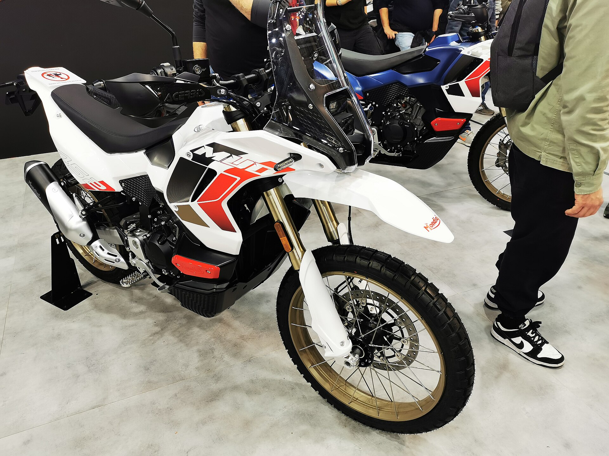
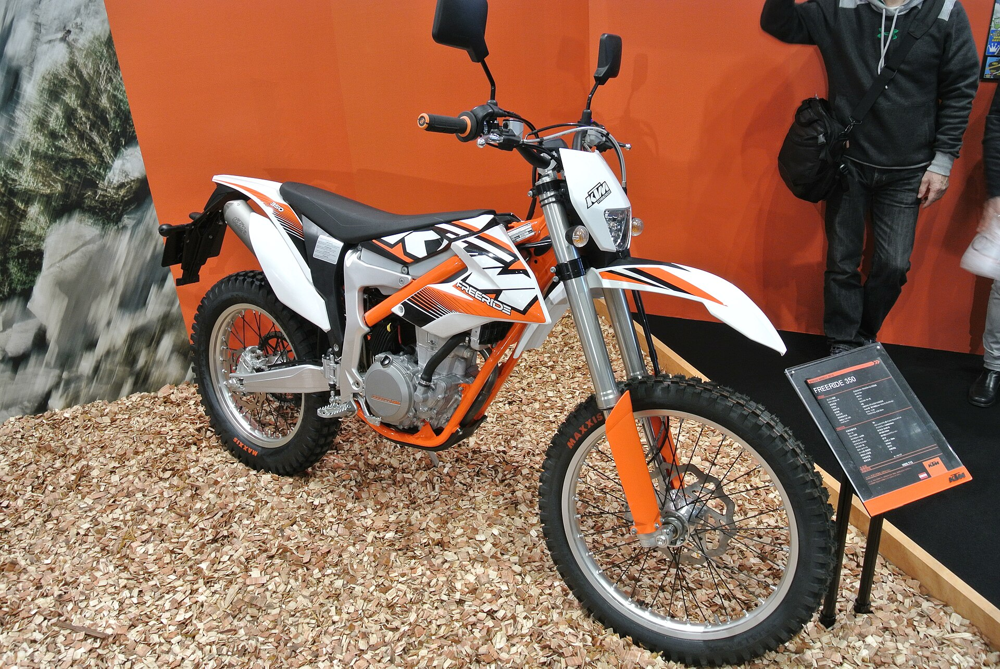

収録 4 件（これから 3 件） ／ 出典：各公式発表／2026年9月14日時点
DATABASE / EVENTオフロードの視点で見る、大型イベント
EICMA と国内モーターサイクルショーは競技ではないが、オフロードの新型と用品が最初に姿を見せる場所。
イベントは「競技」と別区分大会（RACE）と混ぜると、オフロード専門という軸がぼける。ショーは「新型・新作を最初に見る場所」として独立させ、鈴鹿8耐のようなロードレースは入れない。
01
これから
11月05–082026

国際見本市
EICMA 2026（第83回 ミラノ国際モーターサイクルショー）
Fiera Milano Rhoミラノ
公式発表
3月20–222027
国内ショー
第43回 大阪モーターサイクルショー 2027
インテックス大阪 1・2号館／屋外特設会場大阪
公式発表
3月26–282027

国内ショー
第54回 東京モーターサイクルショー 2027
東京ビッグサイト東京
公式発表
02
すべて
4月10–122026
国内ショー
第5回 名古屋モーターサイクルショー 2026
Aichi Sky Expo（愛知県国際展示場）常滑
開催済
11月05–082026
国際見本市
EICMA 2026（第83回 ミラノ国際モーターサイクルショー）
Fiera Milano Rhoミラノ
公式発表
3月20–222027
国内ショー
第43回 大阪モーターサイクルショー 2027
インテックス大阪 1・2号館／屋外特設会場大阪
公式発表
3月26–282027
国内ショー
第54回 東京モーターサイクルショー 2027
東京ビッグサイト東京
公式発表
03
競技とのつながり
掲載情報について
収録の基準。オフロードの車両・用品が出展される大型の見本市・ショーのみ。ロードレースや四輪イベントは対象外。名古屋モーターサイクルショーの2027年日程は未発表のため、2026年の開催実績を掲載しています。